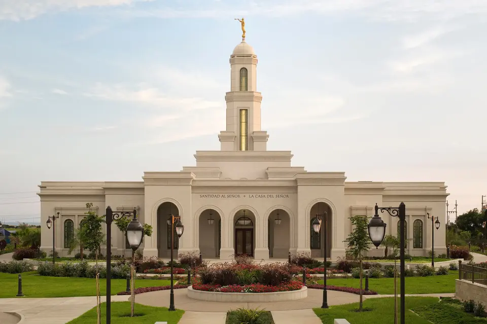

Temple Album
Home
Old
New
Large
Small
Home
Asunción Paraguay Temple
Buenos Aires Argentina Temple
Quetzaltenango Guatemala Temple
Campinas Brazil Temple
São Paulo Brazil Temple

Trujillo Peru Temple
Mexico City Mexico Temple
Montevideo Uruguay Temple
Porto Alegre Brazil Temple